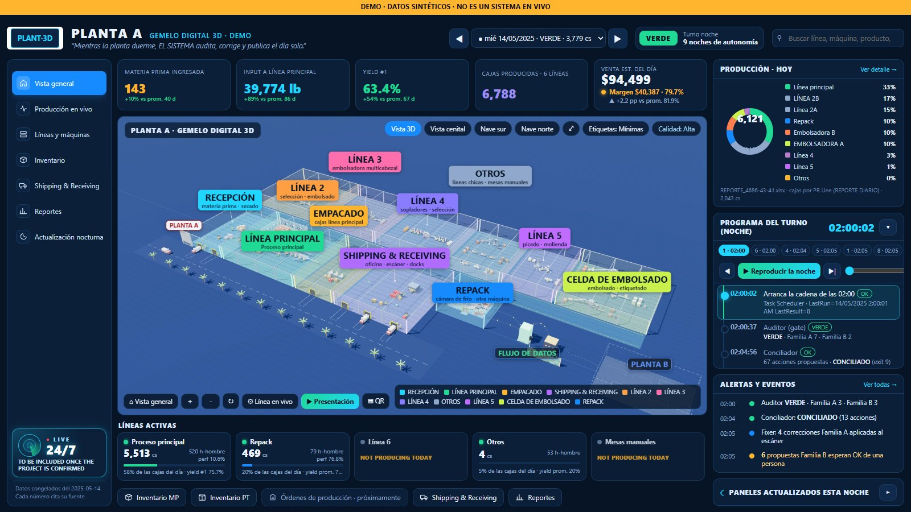

01 / Operational visibility · Digital twinFeatured project · Manufacturing
Explore project visual ↗A production plant you can explore — and understand.
An interactive 3D digital twin connected to operational records, turning plant activity into a navigable, data-backed environment. Built to make the operation easier to understand, investigate and improve.
29 viewsMeasured and traceable
Automated data updates
Automated data updates